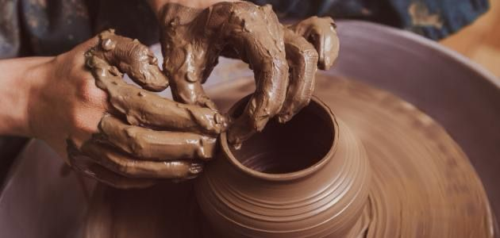

من الطين إلى الفن
تعتبر صناعة الفخار من الفنون التقليدية العريقة في السعودية، حيث تعكس مهارة الحرفيين وارتباط الإنسان بالمواد الطبيعية المتوفرة في بيئته. اعتمدت هذه الحرفة على استخدام الطين وتشكيله يدو ًيا أو عبر قوالب مخصصة، ثم تجفيفه وحرقه لصنع أدوات متعددة الاستخدامات، مثل الأواني المنزلية والجرار الفخارية وأوعية تخزين الماء. وقد ازدهرت هذه الصناعة في العديد من المناطق، حيث تأثرت بالثقافة المحلية لكل منطقة، مما أضفى عليها طاب ًعا فريدًا. واليوم، لا تزال صناعة الفخار تحظى باهتمام واسع، سواء كموروث ثقافي أوكمنتج ُيستخدم في الديكور والحياةاليومية،ممايعكس استمرارهذاالفن العريق عبر الأجيال